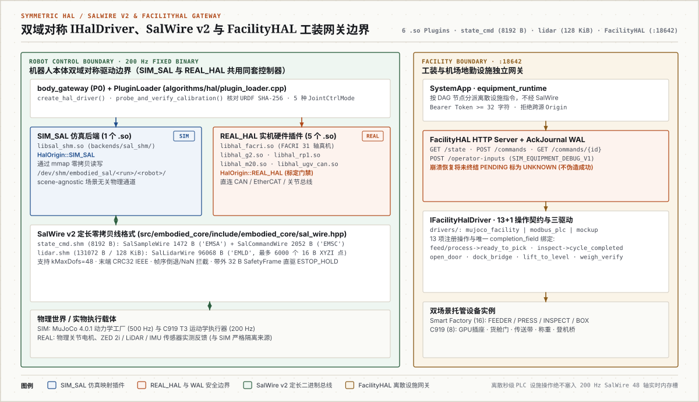

定位与上下游边界
FacilityHAL（src/facility_hal/）将产线工装与机场地勤设施抽象为独立于机器人本体的外部受控硬件边界，上游承接
SystemApp 内 equipment_runtime 经 HTTP
:18642 下发的离散设施操作指令，下游调度 MuJoCo
场景机构、工业 Modbus PLC
或展陈半实物模拟驱动。外部设施动作周期通常持续数秒且依赖离散状态字，因此物理上完全剥离出机器人
200 Hz SalWire v2
实时内存总线，不占用单机运动伺服槽位。

为什么将工装与地勤设备剥离出
SalWire
在物理产线与机场保障场景中，机器人操作对象涵盖上料机、压装机、检测台、箱式输送线、货舱门、地面电源插座、行李传送带、称重台与登机桥等主动基础设施。系统通过双向隔离保证高频伺服与慢速外设互不干扰：
- 机器人本体仅经
SalWirev2 与IHalDriver交互，维持定长48轴关节节拍； - 外部环境设施一律由
FacilityHAL驱动网关（默认绑定:18642）托管； - 上层
SystemApp中的equipment_runtime模块通过 HTTP 客户端向:18642下发标准化设备操作指令，并在TeamRuntimeDAG 中与机器人导航、按键、取放步骤按依赖关系联合编排（例如：机器人到达工位B1按下启动按钮或由系统触发process->FacilityHAL回报ready_to_pick: true-> 机器人执行纯接触抓取）。
三大驱动后端与统一
13+1 操作契约
src/facility_hal/contracts.py 定义了抽象基类
IFacilityHalDriver，当前仓库内置三套可热切换驱动后端：
mujoco驱动（drivers/mujoco_facility.py）：直接驱动 MuJoCo 物理场景中的活动门板、传送带滑轨、升降平台与触发传感器，在零吸附纯接触仿真中真实产生物理位姿与接触完成信号。modbus_plc驱动（drivers/modbus_plc_facility.py）：面向真实实验室或现场产线，通过 Modbus 寄存器读写对接真实 PLC 控制器。mockup驱动（drivers/mockup_facility.py）：面向无物理仿真器或半实物展陈台架（如--site lab），按预设时序模拟机构动作与数字量应答。
全系统统一注册 13 项业务设备操作（外加通用紧急中止动作
stop），每项操作在契约层绑定唯一的完成状态判定字段（OPERATION_COMPLETION_FIELDS）：
| 操作指令名称 | 完成状态字段（completion_field） |
典型应用场景 |
|---|---|---|
feed |
ready_to_pick |
智能工厂上料单元 FEEDER、门禁/提升供料预备 |
process |
ready_to_pick |
智能工厂压装单元 PRESS_CELL、传送与分拣处理 |
inspect |
cycle_completed |
智能工厂检测台 INSPECTOR、称重台与分拣复检 |
present_box |
box_ready |
智能工厂出料输送台 CONVEYOR_BOX 料箱到位就绪 |
open_door / close_door |
door_opened / door_closed |
C919 前货舱门
AC06_FWD_CARGO_DOOR、安检门与登机桥门 |
dock_bridge / retract_bridge |
bridge_docked / bridge_retracted |
登机桥 GS01_JETBRIDGE、传送带
GS02_BELT_CONVEYOR 靠机与撤离 |
lift_to_level |
level_reached |
客舱配餐剪叉升降车 GS09_CATERING_LIFT
举升至舱门高度 |
convey_transfer |
transfer_completed |
行李分拣线 ZN07_BAGGAGE_SORTER 与传送带连续转运 |
weigh_verify |
weight_verified |
行李/货物称重台 ZN11_CARGO_SCALE 核重校验 |
verify_plug_seated /
verify_plug_removed |
plug_seated / plug_removed |
机首地面电源插座 AC09_GPU_RECEPTACLE
插头到位与拔除电气确认 |
网关安全边界与
AckJournal 崩溃恢复机制
src/facility_hal/gateway/http_server.py
面向多机系统与本地调试工具提供严格的 HTTP 接口控制：
- 强制长令牌与跨域阻断：服务端拒绝默认弱口令，强制要求调用方提供长度不少于
32个字符的 Bearer Token，并在中间件层直接拦截所有跨源Origin请求。 - 标准操作端点：暴露
GET /state（查询全量设备快照）、POST /commands（提交幂等设备指令）、GET /commands/{request_id}（轮询指令终态）；另提供受明确标签SIM_EQUIPMENT_DEBUG_V1约束的调试接口POST /operator-inputs与GET /operator-inputs/{event_id}供仿真环境面板人工介入。 - 预写日志
AckJournalWAL 核查：每条设施指令在送往底层驱动前首先持久化写入AckJournalWAL 日志；若网关进程在动作执行中途崩溃或重启，恢复阶段自动将所有仍停留在未终结态PENDING的旧指令标记为UNKNOWN而绝不伪造成功完成，强制上层调度显式复检设备真实物理状态。
双场景接入设备拓扑对照
平台在两大核心场景中共纳管 24
台工业与地勤设施，其中智能工厂按 4 条产线部署
16 个单元格，C919 机坪接入 8 台保障设备。
查看双场景全量接入设施清单（16 台产线设备 + 8 台地勤设施）
| 场景名称 | 设备标识 / 编号范围 | 设施类型与业务职责 |
|---|---|---|
| Smart Factory | A1–D1、A2–D2、A3–D3、A4–D4（共
16 台） |
四条并行产线单元格，分别覆盖
FEEDER、PRESS_CELL、INSPECTOR 与
CONVEYOR_BOX |
| C919 Ground Turnaround | AC09_GPU_RECEPTACLE |
机首地面电源插座（verify_plug_seated /
verify_plug_removed） |
| C919 Ground Turnaround | AC06_FWD_CARGO_DOOR |
前货舱门（open_door / close_door） |
| C919 Ground Turnaround | GS02_BELT_CONVEYOR |
行李传送带（dock_bridge / retract_bridge /
convey_transfer） |
| C919 Ground Turnaround | ZN11_CARGO_SCALE |
行李与货物称重台（weigh_verify） |
| C919 Ground Turnaround | ZN07_BAGGAGE_SORTER |
行李分拣线（convey_transfer /
inspect） |
| C919 Ground Turnaround | ZN05_GATE_DOOR |
安检联锁门（open_door / close_door） |
| C919 Ground Turnaround | GS09_CATERING_LIFT |
客舱配餐剪叉升降车（lift_to_level） |
| C919 Ground Turnaround | GS01_JETBRIDGE |
旅客登机桥（dock_bridge / retract_bridge /
open_door） |